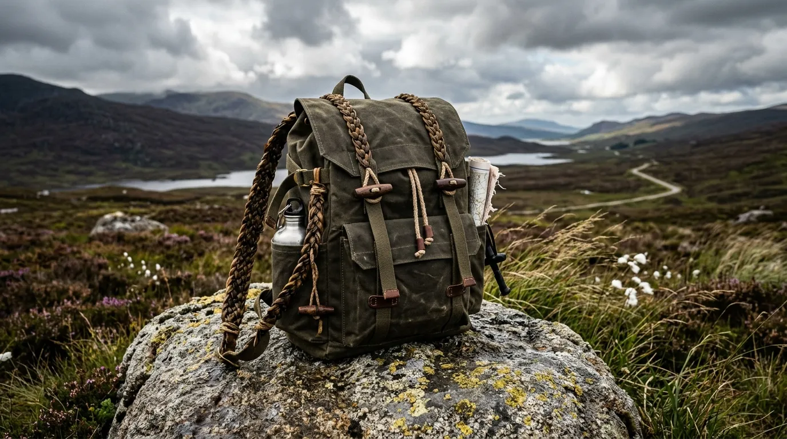
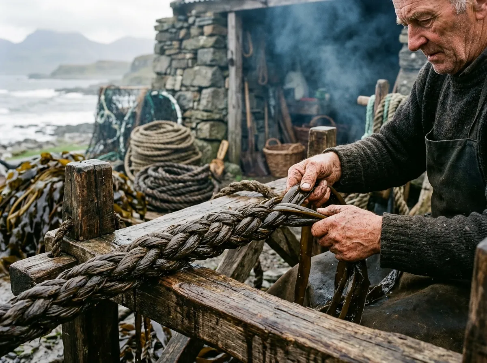

Monach Traverse Haversack
- Volume: 38 Litres
- Material: Waxed flax duck canvas
- Fittings: Plaited kelp bindings & bronze toggles
£340 GBP
Following winter gales across the Outer Hebrides, massive forest-grown stipes of Laminaria hyperborea tear free from sub-tidal reefs and wash ashore along the Sound of Monach. These thick, rubbery sea-stems have spent decades flexing against thirty-foot Atlantic swells, developing a dense cellular elasticity that synthetic cordage manufacturers spend millions attempting to replicate in chemical reactors.
We gather the fresh drift at low water, rinsing away surface grit in peat-tinted freshwater burns before steeping the stems in an infusion of coastal bog myrtle and unrefined beeswax. The natural alginate sugars lock in moisture while repelling biological decay. Once conditioned, we split the thick stipes into supple ribbons and plait them by hand on weighted open-air wooden looms exposed to the salt-laden Hebridean wind.
The resulting cordage remains remarkably supple in freezing spray and grips slick wet timber with greater friction than synthetic kernmantle rope. When loaded under heavy strain, the plaited kelp yields a gentle, shock-absorbing stretch that softens sudden kayak tow surges before returning smoothly to its resting length. It is tough, entirely organic equipment forged directly from the sea it is built to traverse.

Organic, repairable field equipment crafted with traditional island joinery.

£340 GBP
£125 GBP
£210 GBP
£95 GBP
Slow, patient craft dictated entirely by Hebridean weather windows.
We monitor the massive Atlantic swells that strike the Uist coastlines during winter storms. At the following low-water spring tide, we venture onto the exposed skerries to harvest the freshly uprooted, thickest Laminaria hyperborea stipes before they begin to degrade on the strandline.
The raw kelp stems are carried inland to fast-flowing, peat-tinted moorland burns. Here, they undergo a thorough, rigorous washing process to remove abrasive sand, shell grit, and excess surface salts, preparing the cellular structure for the deep-conditioning phase.
The cleaned stipes are steeped in vats containing a warm infusion of locally foraged coastal bog-myrtle and unrefined beeswax. This crucial stage seals in the kelp's natural alginate moisture, significantly increasing its flexibility while the bog-myrtle tannins prevent biological decay.
Once fully conditioned, the thick stems are carefully split into uniform ribbons. Our artisans plait these ribbons by hand on weighted, open-air driftwood frames. The constant exposure to the salt-laden Hebridean wind during the plaiting process slowly cures the cordage into its final, high-tensile state.
Proven durability along the most exposed maritime coastlines in the British Isles.
"During a brutal winter crossing of the Sound of Harris, the Skerry Tow Line proved its worth. The gentle, yielding stretch of the kelp plait absorbed the vicious, snatching motion of the following seas, making the tow infinitely more manageable than a rigid synthetic line."
— Calum M., Expedition Sea Kayaker
"Ten days wild-camping around Barra Head, and the Peat-Smoked Bivouac Tarp never faltered. Battered by relentless Force 8 gales and horizontal rain, the linseed-proofed canvas held absolutely fast, while the kelp tie-outs gripped the wooden pegs like iron."
— Eilidh R., Coastal Forager
"Carrying heavy botanical samples across the North Uist machair requires serious support. The Shore-Juniper Pack Frame, bound with those incredibly tough stipe lashings, distributes the load perfectly without the rigid, bruising feel of an aluminium internal frame."
— Dr. Ian S., Maritime Botanist
Easy, tactile field care that ensures your equipment lasts for generations.
We recommend re-proofing your canvas at the end of every demanding season. Simply rub our supplied, locally sourced beeswax bars vigorously into the fabric, then gently melt the wax into the weave using a warm iron or by placing the pack near a steady campfire.
While our gear thrives in marine environments, salt crystals can become abrasive when dry. We advise giving your packs and cordage a thorough, fresh-water rinse after prolonged ocean exposure to maintain the suppleness of the kelp and canvas.
Always allow your kelp cordage to air-dry naturally in a well-ventilated space. Never force-dry the stipe lashings near direct stove heat or radiators, as extreme, sudden temperatures can cause the organic fibres to become brittle and lose their elasticity.
No. During our curing process, the kelp is deeply infused with coastal bog-myrtle. The rich tannins naturally present in the bog-myrtle provide an exceptional, long-lasting resistance to mould, mildew, and biological decay, even when stored damp.
Absolutely. Every major piece of equipment we dispatch includes a small repair kit of spare, conditioned kelp thongs and waxed thread. The traditional island joinery techniques we use are specifically designed to be easily maintained and field-repaired by the owner.
For prolonged off-season periods, we strongly recommend storing your packs and lines in a cool, dry environment. A cold-storage shed or an unheated room is ideal, ensuring the beeswax and linseed coatings remain stable and the kelp retains its conditioned moisture balance.
Direct relationship with island craftsmen. We operate in small, seasonal production batches to ensure the highest quality.
Workshop Address:Direct Workshop Telephone: 01876 500 214